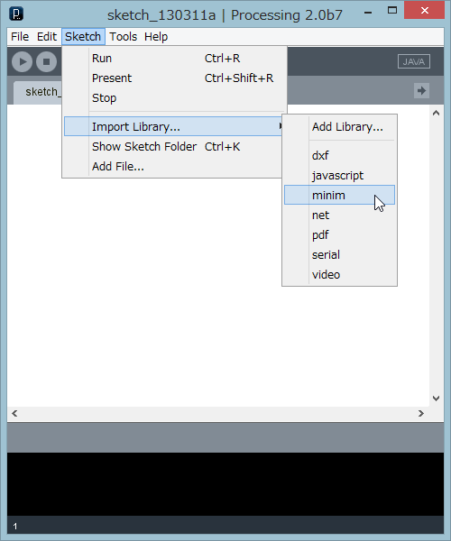

音を使う
音声ファイルを再生したり、音に応答するようなプログラムを作る場合には、 音を扱う機能をもったクラスが必要です。 音声を扱うクラスがパッケージされたProcessing用の、ライブラリを使います。音声処理ライブラリは複数ありますが、そのうち、Processingに同梱されているMinimを使って、音声ファイルを再生したり、音を合成するプログラムを作りましょう。
このセクションでは、プログラムの動作を別のページで試すようになっています。リンク先のページで動作を確認してください
他のセクションのプログラムはHTML5の<canvas>タグで、プログラム(pdeファイル)をJavaScriptのプログラム(processing.ps)によって、動作させています。ただ、この方式はライブラリを使ったプログラムには対応していないため、このセクションではAppletを使います。
Appletの実行には、Javaの実行環境(JRE)が必要で、使っているブラウザによってはインストールするか尋ねられる場合があります(インストールは自動化されていて、簡単です)。
他のセクションのプログラムはHTML5の<canvas>タグで、プログラム(pdeファイル)をJavaScriptのプログラム(processing.ps)によって、動作させています。ただ、この方式はライブラリを使ったプログラムには対応していないため、このセクションではAppletを使います。
Appletの実行には、Javaの実行環境(JRE)が必要で、使っているブラウザによってはインストールするか尋ねられる場合があります(インストールは自動化されていて、簡単です)。
Minimライブラリを使う
ライブラリの中のクラスを使うには、ライブラリの中のクラスを参照する(使う)ことをimport文で示します。そのクラスを使う前、pdeファイルの先頭に、importに続いて使うクラスを指定する必要がありますが、通常はクラスをひとつずつ指定するのではなく、パッケージに含まれるクラス全体をインポート(使うことを宣言)しておきます。

左図のように、Processingの[Sketch]メニューの[Import Library]からMinimを選択すると、processingエディタに表示されているプログラムの先頭に次のようなimport文が自動生成されます。
import ddf.minim.spi.*; import ddf.minim.signals.*; import ddf.minim.*; import ddf.minim.analysis.*; import ddf.minim.ugens.*; import ddf.minim.effects.*;これはMinimに含まれるパッケージ全体をインポートする記述ですが、プログラムごとに使用するクラスは違うので、いつもすべてのimport文が必要とは限りません。ただし、Minimライブラリの中心の働きをするMinimクラスはddf.minimパッケージに含まれるので、import ddf.minim.*;は常に必要です。
MinimのWebサイトのマニュアルや APIから使い方を知ることができます。 また、 Processingのサンプル(Java Examples)のLibrariesにMinimを使ったプログラムサンプルがあります。
Minimライブラリの概要
Minimライブラリのクラスの中核となるのが、ddf.minimパッケージで、必ずimportします。音声ファイルを再生するだけなら、このパッケージだけが必要です。Minimの機能を使う時には、次のようにMinimクラスのオブジェクトを必ず生成します。Minimクラスのコンストラクタに指定しているthisは自分自身のオブジェクトを指す特別な値です。今の場合は作っているプログラム自身を意味します。
import ddf.minim.*;
Minim minim;
void setup(){
minim = new Minim(this);
....
}
そして、プログラムが音をどう扱うかに合わせて、Audio入出力用のクラスや音合成のクラスを使います。
| クラス名 | 主な機能とよく使うフィールドとメソッド |
|---|---|
| AudioPlayer (ddf.minimパッケージ) | WAV、AIFF、AU、SND、MP3形式の音声ファイルを再生する。 play()、loop()、rewind() |
| AudioInput (ddf.minimパッケージ) | 入力をモニタリングする。 |
| AudioOutput (ddf.minimパッケージ) | 音声を合成する。 |
| AudioSource (ddf.minimパッケージ) | 上記3クラスのスーパークラス。 mix、left、right、buffersize()、close() |
| AudioRecorder (ddf.minimパッケージ) | 音声をバッファやディスクに録音する。 beginRecord()、endRecord()、save() |
| Oscil (ddf.minim.ugensパッケージ) | 振動数を指定して波形を生成する。UGens(Unit Generatorのサブクラス) setFrequency(float hz)、patch(AudioOutput out)、unpatch(AudioOutput out) |
音声ファイルを再生する
リスト11-1は、音声ファイルを再生する方法を示したサンプルです。 次のような手順で、準備、再生、終了を行います。- (1)音声ファイルをスケッチフォルダのdataフォルダに置く。
- (2)必要なライブラリ(ddf.minim.*;)をインポート。
- (3)Minimと、音声出力のためのAudioPlayオブジェクト用変数を定義。
- (4)setup()の中で、Minimオブジェクト生成。
- (5)setup()の中で、音声ファイルを読み込んで、AudioPlayerオブジェクトを生成。MinimクラスのメソッドloadFile("ファイル名")を使う。
- (6)音声を再生するには、AudioPlayのplay()メソッドを使う。マウスがクリックされた時再生するように、mouseClicked()の中で実行。
- (7)AudioPlayは現在再生中の場所の情報をもっている。再生終了後、再び頭から再生するには、rewind()を使って再生場所を先頭にしてから、play()を実行する。ループ再生する時は、loop()を使えば、rewind()は不要。
- (8)プログラムを終了する時には、使ったAudio入出力オブジェクトとMinimオブジェクトをクリアする。この処理はstop()の中に記述する。stop()はプログラムが終了する時、自動的に呼び出される関数で、今までの例では、特別な終了処理が必要でなかったので、定義していなかった。
void stop(){ .... //特別な終了処理 super.stop(); }stop()関数を定義する時は、その最後で必ずsuper.stop();を実行する。superとはスーパークラスの意味で、Processingのプログラムを実行する時に裏で作られるクラスのスーパークラスのstop()を呼び出して、終了処理を完了させます。
【リスト11-1】
import ddf.minim.*; //ライブラリのインポート←(2)
Minim minim; //Minim用変数←(3)
AudioPlayer sound; //音声ファイルデータ←(3)
void setup(){
size(250, 250);
fill(225, 0, 0);
noStroke();
minim = new Minim(this); //Minimオブジェクト生成←(4)
sound = minim.loadFile("funaJingle.mp3"); //音声ファイルをロード←(5)
}
void draw(){
background(255);
float d = sound.mix.level() * 2000; //音のレベルに応じた直径で
ellipse(width/2, height/2, d, d); //円を描く
}
void stop(){ //←(8)
sound.close(); //音声再生オブジェクトを閉じる
minim.stop(); //Minimオブジェクトをクリア
super.stop(); //自分でstop()を定義した時、必須
}
void mouseClicked(){ //クリックでプレイ
sound.rewind(); //先頭に巻き戻す←(7)
sound.play(); //再生する←(6)
}
リスト11-1は、音の大きさと円の直径を関係づけています。sound.mixは、AudioPlayerが持つmix変数(フィールド)にアクセスする記述です。
オブジェクト.変数名
↓ ↓
sound.mix
mixはAudioBufferで、バッファサイズ(デフォルトで1024)分の音声データをまとめて処理します。mixには、ステレオの左右の音声の混合値(モノラルの場合はleftと同じ値)が入っています。level()メソッドはその信号レベル(バッファの中のすべてのサンプル値の二乗平均平方根)を返します(-1～1の間の値)。この値を、円を描画するのに適切な大きさにするためsound.mix.level() * 2000と2000をかけています。
リスト11-1で使う音声ファイルは、 このリンクから保存できます。スケッチフォルダのdataフォルダにコピーしてください。
ラの音を合成する
音声は波動です。シンプルな波形をもつ波動(サイン波)を生成して、音階を作り、それを使って簡単な楽器プログラムを作成してみましょう。振動数を指定して波形を作り出す機能をもつクラスがOscil(振動子)クラスです。まずは、ラの音を鳴らすだけのプログラムを見てみます。
- (1)必要なライブラリ(ddf.minim.*;とddf.minim.ugens.*)をインポート。
- (2)Minimと、音声出力のためのAudioOutput、振動子Oscilオブジェクト用変数を定義。
- (3)setup()の中で、Minimオブジェクト生成。
- (4)setup()の中で、MinimクラスのgetLineOut()メソッドを使ってAudioOutputオブジェクトを得る(ステレオ、バッファサイズ1024、サンプルレート44100、ビッド深度16で音声が生成される＊)。
- (5)振動数(440、ラの音)、音量(0.5)、波形(Waves.SINE)を指定して、Oscilオブジェクトを生成。
- (6)OscilのスーパークラスUgenのpatch()メソッドを使って、出力をAudioOutputと接続する。
サンプルレート：1秒間に何回音を処理(記録したり、再生したり)するか。人の可聴域の音の場合、44100回。
ビット深度：1回のデータを記録するビット数。
バッファサイズ：データをこの大きさ分、溜めながらまとめて処理する。
ビット深度：1回のデータを記録するビット数。
バッファサイズ：データをこの大きさ分、溜めながらまとめて処理する。
【リスト11-2】
import ddf.minim.*; //必要なライブラリをインポート←(1)
import ddf.minim.ugens.*;
Minim minim; //必要な変数を準備←(2)
AudioOutput out;
Oscil scale;
void setup() {
size(500, 200);
minim = new Minim(this); //Minimオブジェクト生成←(3)
out = minim.getLineOut(); //出力用のAudioOutputオブジェクトを準備←(4)
scale = new Oscil( 440, 0.5, Waves.SINE ); // サイン波の振動子を生成, 振幅 0.5←(5)
scale.patch(out); //←(6)
}
void draw() { }
リスト11-2のプログラムは描画をしないので、draw()の中は空ですが、音を鳴らす処理を進めるために、draw()は必要です。合成する音の音程(振動数)を変えるにはsetFrequency()を使います。 リスト11-2の、draw()関数を次のようにすると、マウスカーソルのx方向の位置によって合成する音の高さが変わります。
「テルミン」は、アンテナの間においた手の位置によって音程と音量がかわる「楽器」ですが、このプログラムも画面を左右に動かすことで、音が変わる一種楽器のような動きをします。
void draw() {
scale.setFrequency(map(mouseX, 0, width, 100, 5000));
}
map(mouseX, 0, width, 100, 5000)で、マウスのx位置(0からwidthの間の数)を振動数100Hzから5000Hzの間の値に変換しています。
楽器を作る(その準備)
波動(サイン波)の振動数を変えて音階を作り、それを使って簡単な楽器プログラムを作成してみましょう。こちらのページからプログラムの動作を見てください。ボタンとして働く8つの円があり、マウスオーバーすると、左から順にハ長調の音階が鳴ります。
ボタンのクラスCircleButtonを作り、それを8個並べて配置することにします。 クラスのAPIは次のようなものとします。
クラス名: CircleButton ボタン。 変数： int x ボタン中央のx座標 int y ボタン中央のx座標 boolean over マウスがボタン上にある時は、trueを返す boolean press マウスボタンがボタン上で押された時は、trueを返す color c ボタンの色 メソッド： void update() ボタンの状態を確認し、overとpressの値を設定。 void display() ボタンを表示(円形)、マウスが上にある時は灰色。 コンストラクタ： CircleButton(xx, yy, d, cc) xx, yy: int, ボタン中央の座標 d : int, ボタンの直径 cc : color, ボタンの色 【例】new CircleButton(40, height/2, 50, color(200, 0, 0)); 位置(40,画面の高さの半分)、直径(50)、色(赤、color(200, 0, 0))
CircleButtonクラスの定義(ソースコード)は別ページに置きました。
マウス押下でラの音が鳴るようにしたリスト11-2の画面上に、CircleButtonを8個配置してみましょう。CircleButtonオブジェクトが8個入る配列を用意し(bu)、位置を少しずつずらして円ボタンオブジェクトを生成し、格納します。
そして、draw()内で、update()とdisplay()を実行し、描画します。
上の画像は反応しません。
【リスト11-3】
import ddf.minim.*;
import ddf.minim.ugens.*;
Minim minim;
AudioOutput out;
Oscil scale;
CircleButton bu[]; //円ボタン用配列
void setup() {
size(500, 200);
minim = new Minim(this);
bu = new CircleButton[8]; //円ボタンオブジェクトが8個入る領域を生成
for (int i=0; i<bu.length; i++) {
bu[i] = new CircleButton(40+60*i, height/2, 50, color(200, 0, 0)); //ボタン作る
}
out = minim.getLineOut(); //出力用のAudioOutputオブジェクトを準備
scale = new Oscil(440, 0.5, Waves.SINE); // サイン波の振動子を生成, 振幅 0.5
scale.patch(out);
}
void draw() {
background(0);
if(mousePressed){ //マウスボタン押下でラの音にする
scale.setFrequency(440);
}else{
scale.setFrequency(0);
}
for (int i=0; i<bu.length; i++) { //ボタンの個数分繰り返す
bu[i].update(); //ボタンの状態を調べ、設定
bu[i].display(); //ボタンを描画
}
}
楽器を作る(完成)
リスト11-3は画面上のどこを押してもラの音がしますが、マウスが左のボタン上に乗ったらド、次のボタン上にきたらレの音と、ハ長調の8音が鳴るようにしましょう。円ボタンのフィールドoverの値を調べ、その値がtrueなら対応する振動数にします。マウスがどのボタンにも乗っていない場合を示すためのboolean型の変数someOnを定義し、音をいつ消すか知るのに使います。ハ長調の音階の振動数を、float型の配列に次のように入れておきます。
float feq[] = {264, 297, 330, 352, 395, 440, 495, 528};
マウスが乗ったボタンのインデックスをiとしたら、次のようにそのインデックスを使って対応する振動数を設定します。
scale.setFrequency(feq[i]);
完成版の動作はこちら。
【リスト11-4】
import ddf.minim.*;
import ddf.minim.ugens.*;
Minim minim;
AudioOutput out;
Oscil scale;
boolean someOn; //マウスがボタン上にある時はtrue
float feq[] = {264, 297, 330, 352, 395, 440, 495, 528}; //各音の振動数
CircleButton bu[];
void setup() {
size(500, 200);
minim = new Minim(this);
bu = new CircleButton[feq.length];
out = minim.getLineOut();
scale = new Oscil(0, 1.5, Waves.SINE); //最初は音を出さない
for (int i=0; i<feq.length; i++) {
bu[i] = new CircleButton(40+60*i, height/2, 50, color(200, 0, 0));
}
scale.patch(out);
}
void draw() {
background(0);
for (int i=0; i<feq.length; i++) {
bu[i].update(); //ボタンの状態を調べ、設定
bu[i].display(); //ボタンを描画
if (bu[i].over) {
scale.setFrequency(feq[i]); //インデックスiの振動数に設定
someOn = true; //マウスがボタンに乗っている状態
}
}
if(!someOn) { //マウスがどのボタンにも乗っていないので、
scale.setFrequency(0); //音を消す
}else{
someOn = false; //次のdraw()の実行に備え、初期化
}
}
演習問題
【問題11-1】練習問題9-2で作ったアニメーションに効果音をつけてください。別ページのプログラムの動作を見てください。
キャラクタが歩いている時は、puya.mp3を、マウスが押されたらpuon.mp3を再生します。
効果音は次のリンクからコピーできます。ジャンプ時の効果音は複数用意しました。音を変えて、効果を試してください。
- 歩く音： puya.mp3
- ジャンプの音1： puon.mp3
- ジャンプの音2： sharan.mp3
- ジャンプの音3： wan.mp3
【問題11-2】リスト7-5の、ビジュアルハーモニーに音をつけてみましょう。
画面中央から左へ水平に弦を張り(線を引き)、円が弦を通過した時に、位置に応じて、音が鳴るようにします。円の動きに応じて、弦が音を奏でるコンテンツとなります。別ページのプログラムの動作を見てください。
2オクターブの音ファイルを用意しました